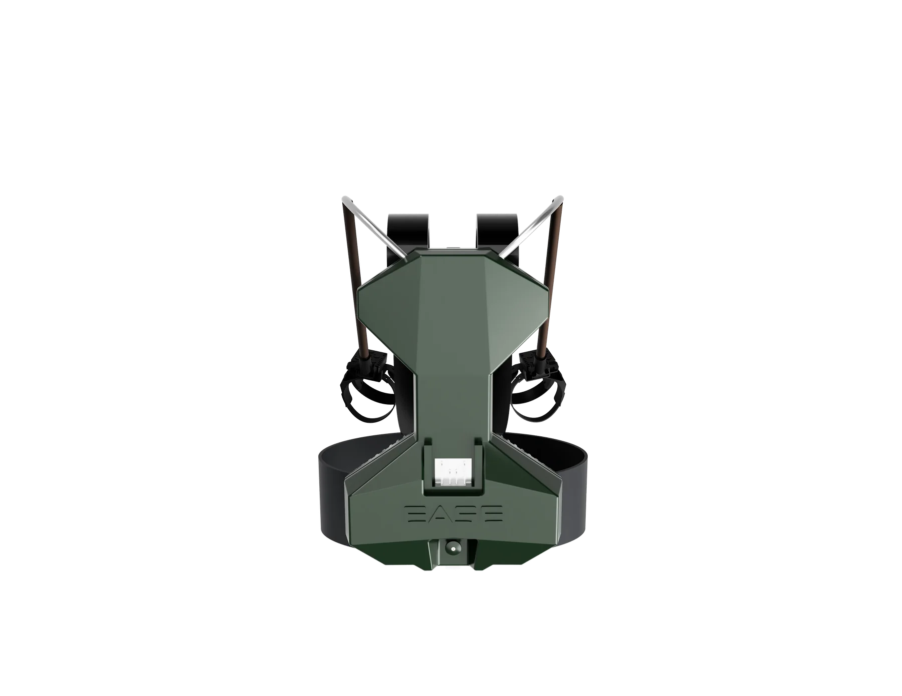
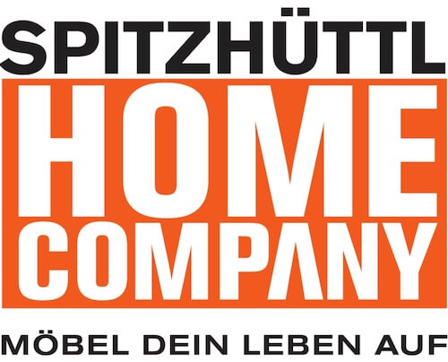
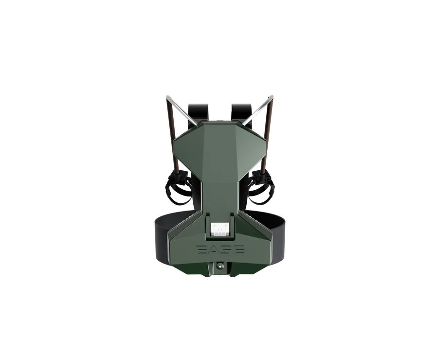
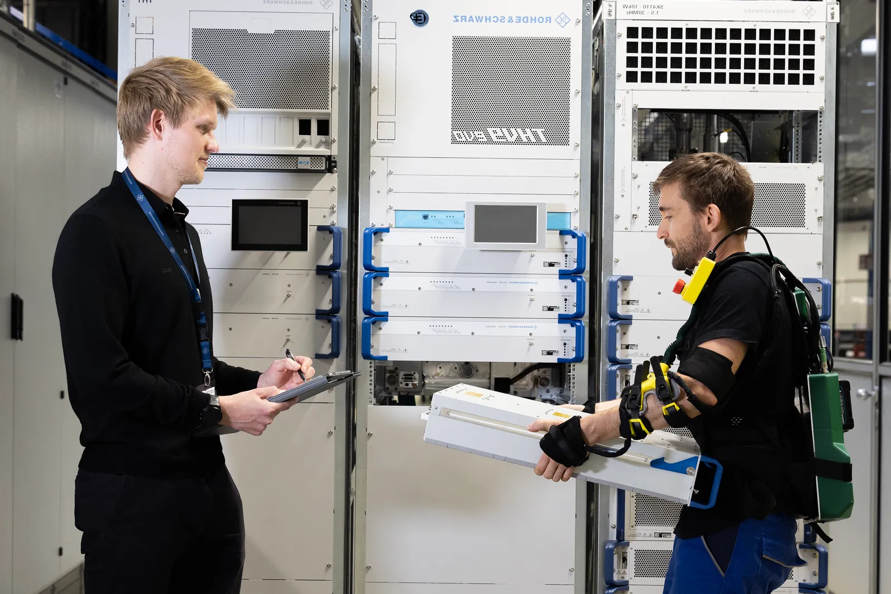
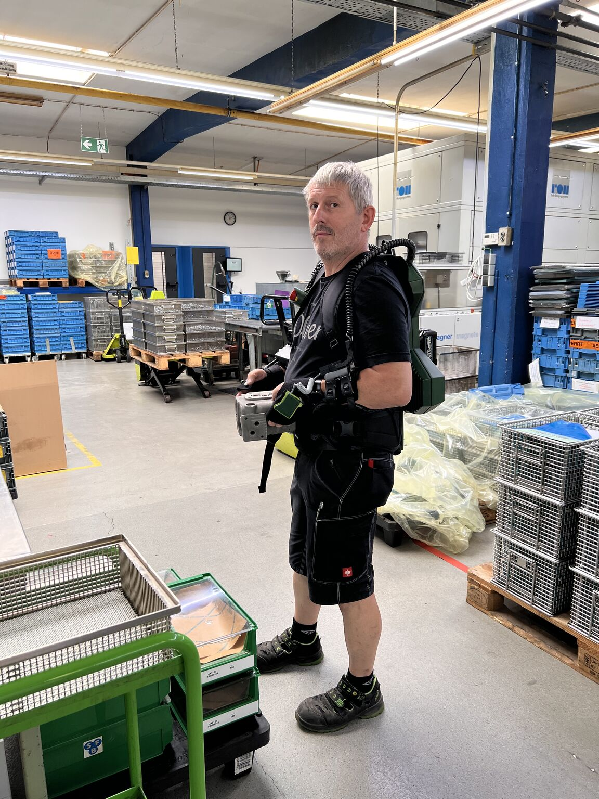
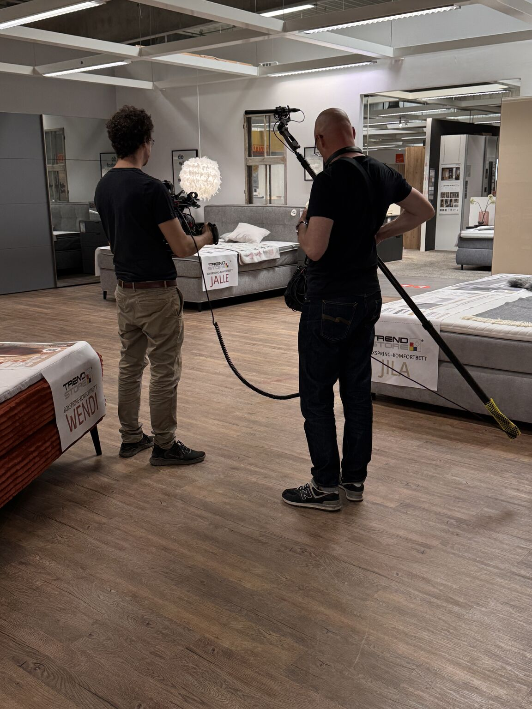
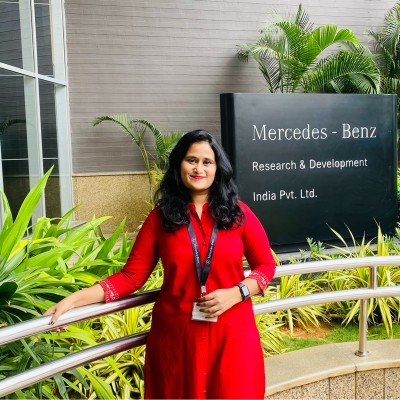

Industrie · Mai 2025
Logistik und Produktion im laufenden Betrieb.
Der Feldtest im Werk Teisnach lieferte konkrete Impulse für die Weiterentwicklung.
Praxistest ansehen
LU 20 · Aktives Exoskelett für die Logistik
LU 20 unterstützt körperlich fordernde Logistikaufgaben aktiv und lässt die Bewegungsfreiheit, die im Arbeitsalltag zählt.

Praxistests
Direktes Feedback aus Produktion und Logistik zeigt, wie sich das LU 20 in unterschiedlichen Einsatzumgebungen bewährt.
Industrie · Mai 2025
Der Feldtest im Werk Teisnach lieferte konkrete Impulse für die Weiterentwicklung.
Praxistest ansehenProduktion · Juli 2026
Erfahrungen aus täglichen Tätigkeiten flossen direkt in die Bewertung der Testphase ein.
Praxistest ansehen
Spitzhüttl Home CompanyMöbellogistik · Juli 2026
Positives Anwenderfeedback und Einblicke für das ARD-Wirtschaftsmagazin Plusminus.
Praxistest ansehenLU 20 Vorteile
LU 20 ist für körperlich fordernde Tätigkeiten in der Logistik entwickelt. Das System unterstützt Rücken und Arme; vergleichbare Abläufe in der Produktion können ebenfalls bewertet werden.
Aktive Unterstützung für zwei besonders beanspruchte Körperbereiche in einem System.

Für dynamische Logistikabläufe entwickelt, bei denen Menschen beweglich bleiben müssen.

Gemeinsam mit Anwenderinnen und Anwendern an realen Logistik- und Industriearbeitsplätzen erprobt.

Ob LU 20 zu Ihrer Logistikaufgabe, Ihrem Arbeitsplatz und Ihrem Team passt, klären wir gemeinsam in einer Demo und Arbeitsplatzbewertung.
Praxiserprobung
Drei Partner, drei reale Arbeitsumgebungen: Das LU 20 wird gemeinsam mit den Menschen weiterentwickelt, die täglich heben, tragen und bewegen.
Industrie & Logistik
Im Werk Teisnach wurde das EASE Exoskelett gemeinsam mit Mitarbeitenden aus Logistik und Produktion unter realen Bedingungen erprobt. Das direkte Feedback lieferte konkrete Impulse für die Weiterentwicklung und bestätigte den Proof of Concept.

Testphase abgeschlossen
Über mehrere Wochen erprobten Mitarbeitende das EASE Exoskelett bei ihren täglichen Tätigkeiten. Ihre Erfahrungen flossen in ein gemeinsames Abschlussgespräch ein – als fundierte Grundlage, um den konkreten Nutzen für die Arbeitsprozesse zu beurteilen.

Möbellogistik
Bei Spitzhüttl wird das LU 20 im realen Lagerbetrieb getestet – dort, wo täglich Möbel gehoben, getragen und bewegt werden. Das erste Feedback der Mitarbeitenden fiel sehr positiv aus. Ein Team der ARD begleitete den Praxiseinsatz für das Wirtschaftsmagazin Plusminus.

Demo anfragen
Ein paar Angaben helfen uns, die Demo auf Ihren Arbeitsplatz und Ihr Team vorzubereiten.
Wir prüfen Aufgabe, Bewegungsablauf und Rahmenbedingungen.
Ihr Team erlebt LU 20 im relevanten Logistikprozess.
Sie erhalten eine Empfehlung für Pilotierung und nächsten Schritt.
Anfrage gesendet
Wir melden uns, um Aufgabe, Arbeitsplatztest und den passenden nächsten Schritt abzustimmen.
Häufige Fragen
Von Unterstützungsleistung und Einsatzgrenzen bis zu Akku, Wartung und Service: Hier finden Sie die wichtigsten Informationen zum LU 20 auf einen Blick.
Ihre Frage ist nicht dabei? Sprechen Sie mit uns.
5 Fragen
Das LU 20 bietet eine Gesamtentlastung von bis zu 20 kg beziehungsweise bis zu 10 kg pro Arm. Das bedeutet, dass die auf Arme, Schultern und Rücken wirkende Belastung durch eine entsprechende Unterstützungskraft reduziert wird. Das tatsächliche Gewicht des Gegenstands verändert sich dadurch nicht.
Auch schwerere Gegenstände können unterstützt gehandhabt werden. Voraussetzung ist jedoch, dass die Person die Last auch ohne Exoskelett sicher handhaben darf und kann. Betriebliche Vorgaben, Gefährdungsbeurteilungen und gesetzliche Belastungsgrenzen bleiben gültig.
Aktive Unterstützung bedeutet, dass das System mit Akku, Sensorik und Motoren arbeitet. Die Motoren erzeugen über ein Seilzugsystem zusätzliche Kraft und unterstützen den Körper gezielt beim Heben, Tragen und Absetzen von Lasten. Die Stärke und Geschwindigkeit der Unterstützung können stufenweise über das Bedienpanel eingestellt werden.
Das System ist für dynamische und wechselnde Tätigkeiten ausgelegt. Im freien Modus folgt es den Bewegungen, sodass sich Mitarbeitende zwischen unterstützten Hebevorgängen bewegen und Nebentätigkeiten ausführen können. Für einen sicheren Einsatz müssen ausreichend Bewegungsraum und geeignete Arbeitsplatzbedingungen vorhanden sein.
Nach erfolgter Einweisung und individueller Einstellung lässt sich das System typischerweise in weniger als einer Minute anlegen. Vor jeder Nutzung muss die Passform kontrolliert und an die jeweilige Person angepasst werden.
Das LU 20 wiegt ca. sechs Kilogramm. Die Last wird über die körpernahen Strukturen auf Unterarme, Schultern, Rücken und Hüfte verteilt. Durch das Rucksacksystem, das gemeinsam mit Deuter entwickelt wurde, spürt man das Gewicht nahezu nicht.
5 Fragen
Das LU 20 ist insbesondere für wiederholtes und dynamisches Heben, Tragen, Absetzen und Positionieren von Lasten zwischen Boden- und Schulterhöhe vorgesehen. Typische Anwendungsbereiche sind:
Das LU 20 ist für trockene Innenräume in gewerblichen und industriellen Arbeitsumgebungen ausgelegt. Der vorgesehene Temperaturbereich reicht von −10 °C bis +40 °C.
Das System besitzt keinen besonderen Schutz gegen Wasser oder Staub. Der Einsatz im Freien sowie in explosionsgefährdeten oder anderweitig besonders gefährlichen Bereichen ist ohne gesonderte Bewertung und Freigabe nicht vorgesehen.
Das System ist für geschulte, erwachsene und gesundheitlich geeignete professionelle Anwender vorgesehen. Vor der ersten Nutzung sind eine Einweisung und die Freigabe für den jeweiligen Arbeitsplatz erforderlich. Die Nutzung am Arbeitsplatz erfolgt grundsätzlich freiwillig.
Schwangere Personen sowie Personen mit Herzschrittmachern, metallischen Implantaten oder vergleichbaren medizinischen Risiken dürfen das System nur nach entsprechender medizinischer Freigabe verwenden. Bei gesundheitlichen Zweifeln sollte vor der Nutzung ärztlicher Rat eingeholt werden.
Vor der ersten Nutzung erhalten die Anwender eine praxisnahe Einweisung. Dabei werden das korrekte Anlegen und Einstellen, die Bedienung, die Einsatzgrenzen, wichtige Sicherheitshinweise sowie die Verwendung am vorgesehenen Arbeitsplatz erklärt. Erst danach darf das System eingesetzt werden.
Auch Vorgesetzte, Multiplikatoren sowie Verantwortliche aus Arbeitsschutz und Organisation können in die Einweisung einbezogen werden. Die betriebliche Gefährdungsbeurteilung und die gesetzlich erforderliche Unterweisung durch den Arbeitgeber bleiben davon unberührt.
Nein. Das LU 20 unterstützt den Körper, ersetzt aber weder eine Gefährdungsbeurteilung noch eine ergonomische Arbeitsplatzgestaltung, Betriebsanweisungen oder gesetzlich vorgeschriebene Unterweisungen. Es darf nur an Arbeitsplätzen eingesetzt werden, an denen die Tätigkeit auch ohne Exoskelett zulässig und sicher ausführbar ist.
5 Fragen
Die Akkulaufzeit beträgt je nach Nutzung, Unterstützungsstufe und eingesetztem Akku typischerweise bis zu acht Stunden. Bei besonders anspruchsvollen oder dauerhaft motorunterstützten Tätigkeiten kann sie kürzer ausfallen. Durch den Wechselakku lässt sich das System mit wenigen Handgriffen für die nächste Schicht vorbereiten. Bei planmäßigem Akkuwechsel ist ein Betrieb über alle drei Schichten möglich.
Die Ladezeit hängt von der Kapazität des eingesetzten Akkus und dem verwendeten Ladegerät ab. Da ein entladener Akku direkt gegen einen geladenen ausgetauscht werden kann, muss der laufende Betrieb während des Ladens nicht unterbrochen werden.
Akku und Ladegerät sind grundsätzlich separat zu beschaffen, sofern nichts anderes vereinbart wurde. Das LU 20 verwendet freigegebene Akkus der Makita-XGT-40V-max-Reihe sowie ein dazu passendes Ladegerät.
Die körpernahen textilen Komponenten sind austauschbar und maschinenwaschbar. Für jede regelmäßig nutzende Person ist ein eigener Textilsatz vorgesehen. Bei einem Nutzerwechsel werden die Textilien gewechselt und entsprechend der Pflegeanleitung gereinigt. So ist auch im Mehrschichtbetrieb eine hygienische Nutzung möglich.
Die mechanischen und elektronischen Komponenten dürfen nicht in der Waschmaschine gereinigt werden. Für diese gelten die Reinigungsanweisungen der Bedienungsanleitung.
Die reguläre Wartung ist abhängig von der Einsatzintensität des Exoskeletts. Sie werden durch das Exoskelett auf die nötigen Wartungen hingewiesen. Dabei werden die mechanischen und elektronischen Komponenten, sicherheitsrelevante Funktionen, Verbindungselemente und Verschleißteile geprüft. Erforderliche Wartungsarbeiten und freigegebene sicherheitsrelevante Updates werden durchgeführt und in einem Wartungsprotokoll dokumentiert.
Das Gerät darf nur durch EASE oder einen freigegebenen Service-Dienstleister geöffnet, repariert oder technisch verändert werden.
5 Fragen
Wir begleiten Sie bei der Einführung, der korrekten Einstellung und der sicheren Nutzung des Systems. Je nach Vereinbarung umfasst die Betreuung unter anderem:
Bei technischen Fragen und Störungen steht Ihnen ein persönlicher Ansprechpartner zur Verfügung.
Die User-Experience-Garantie ist eine freiwillige Zufriedenheitsgarantie für die ersten drei Monate nach der Lieferung. Sie greift, wenn das System ernsthaft und organisatorisch eingebunden im Betrieb eingesetzt wurde, aber dennoch eine erhebliche und nachhaltige Akzeptanzproblematik bei den vorgesehenen Mitarbeitenden bestehen bleibt.
Voraussetzung ist, dass das Problem frühzeitig gemeldet wird und EASE Gelegenheit erhält, die Ursachen zu analysieren und mindestens zwei Optimierungsversuche durchzuführen. Dazu können zusätzliche Einweisungen, angepasste Einstellungen, Schulungen oder technische Optimierungen gehören. Bleibt die wesentliche Akzeptanzproblematik bestehen, können die betroffenen Systeme nach den vertraglich vereinbarten Bedingungen zurückgegeben werden. Dabei handelt es sich um ein vertragliches Sonderrückgaberecht und nicht um eine technische Erfolgsgarantie oder ein gesetzliches Widerrufsrecht.
Für die Dauer einer regulären Wartung wird im Rahmen der entsprechenden Servicevereinbarung ein funktional gleichwertiges Ersatzgerät bereitgestellt. Dieses muss nicht fabrikneu oder mit dem ursprünglichen Gerät identisch sein, bietet aber dieselbe vertragsgemäße Funktionalität.
Ein Ausfall sollte unverzüglich über den vereinbarten Servicekanal gemeldet werden. Benötigt werden insbesondere die Seriennummer, eine Fehlerbeschreibung, vorhandene Fotos, Videos oder Fehlermeldungen sowie die Lieferadresse.
Nach Eingang einer vollständigen Störungsmeldung wird im Rahmen der Servicevereinbarung ein funktional gleichwertiges Ersatzgerät bereitgestellt. Für Lieferadressen in Deutschland ist eine Bereitstellung innerhalb von fünf Werktagen und für Lieferadressen in anderen EU-Mitgliedstaaten innerhalb von sieben Werktagen vorgesehen.
Ja. Demonstrationen und praktische Produkttests können vereinbart werden. Dabei wird das System im vorgesehenen Arbeitsumfeld oder anhand typischer Tätigkeiten vorgestellt. So lassen sich Funktion, Passform, Tragekomfort und Unterstützungswirkung unter realistischen Bedingungen beurteilen.

Der Koordinator
Chief Executive Officer
Business Development, Investor Relations und Strategie

Die Enthusiastin
Chief Commercial Officer
Customer Relations und External Operations
Expertin für Produktions-Ergonomie & Exoskelette

Der Macher
Chief Technology Officer and Chief Operations Officer
Tech und Supply Chain Management

Der Zahlenflüsterer
Chief Financial Officer
Fundraising, Planung und Controlling
Vertrieb
Vertrieb
Engineering
Engineering
Engineering

Founders Associate (CEO)
Design
Sales und Marketing
Founders Associate (CCO)
Engineering